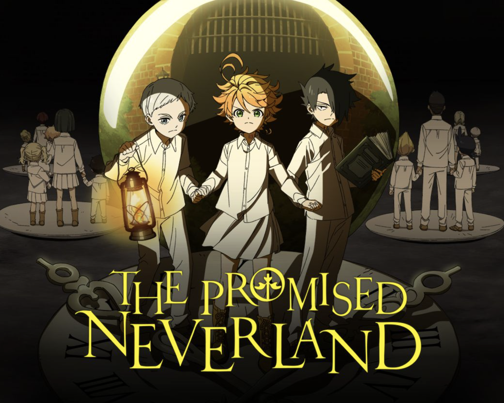

4. The Promised Neverland

The Promised Neverland is a mystery and horror anime about orphans who discover their idyllic orphanage is actually a farm raising them as food for demons. The children, led by Emma, Norman, and Ray, must use their intelligence to plan an escape from their loving caretaker, "Mom," and their fate. The first season focuses on this tense, strategic battle of wits against their "mother".